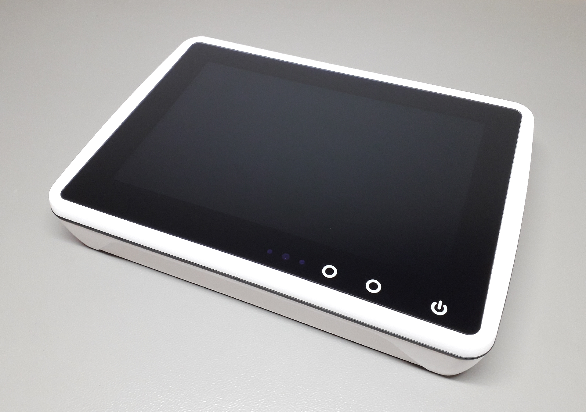

OBP-Plotter V4 Documentation
Letzte Aktualisierung Nov 10, 2024
Der OBP-Plotter V4, entwickelt von Christian Hartz, wird für die Darstellung von marinen Karten und Daten auf Freizeit-Booten verwendet. Zielgruppe sind Sportbootfahrende in aller Welt.
Der OBP-Plotter ist ausgestattet mit einem tageslichttauglichen 10-Zoll-Touch-Display. Als Hardwarebasis dienen Compute Module der Versionen 4 und 5 der Raspberry Foundation. Mit der Außenwelt kommuniziert der Plotter vor allem per USB oder WLAN. Das macht ihn maximal flexibel im Einsatz unterschiedlichster Navigationssysteme an Bord.
{kind=link}
The OBP Plotter V4, developed by Christian Hartz, is used for displaying marine charts and data on leisure boats. The target group is recreational boaters all over the world.
The OBP plotter is equipped with a daylight-compatible 10-inch touch display. Compute modules versions 4 and 5 from the Raspberry Foundation serve as the hardware basis. The plotter communicates with the outside world primarily via USB or WLAN. This makes it extremely flexible when using a wide range of navigation systems on board.
Note
…still under construction…
Sprachen
- Manual (en)
- Handbuch (de)
- Übersicht
- Einsatzmöglichkeiten
- Inbetriebnahme
- Installation Android
- Konfiguration Android
- Der Plotter im Netzwerk
- Fernbedienung und Sensorik
- AvNav im Einsatz
- Sicherheitshinweise
- Fragen und Antworten
- Meinungen und Tipps
- Bekannte Fehler
- Technische Unterstützung
- Service
- Technische Daten
- DIY-Möglichkeiten
- Historie
- Mitarbeit
- Spenden
- Glossar